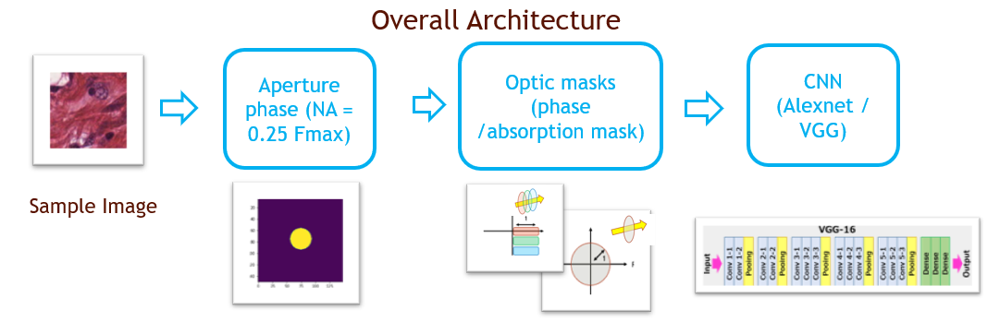
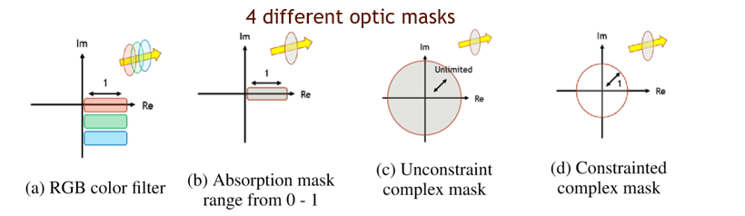
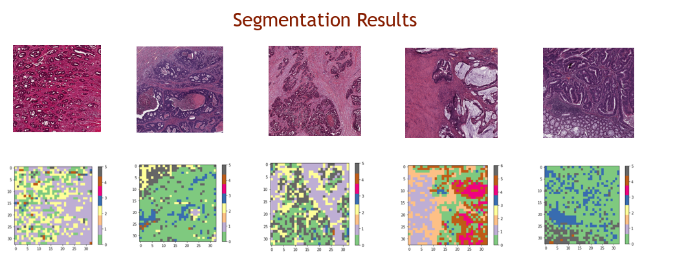

This project aim to optimize the paramter of the optic mask in microscope, in classificaiton of the colectoral histology images (8 categories). I simulate four different optics masks and two CNN architectures, and I would like to investigate the best physical-CNN architectures. The result shows that the unconstraint phase mask cascading with the Alexnet CNN have the highest performance (69% Accuracy) compred with other architectures. While the RGB color filter would be the most practicable, cost-effective physical layer setup (66% accuracy).

|
|
|

After training the model, the CNN could successfully segment different categories of histology, which is validated by the large area colectoral images:
|
|  |
| Paper PDF |